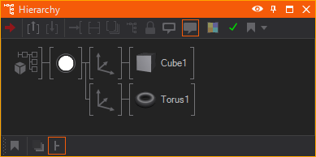

Everyone who builds scenes using real-time graphics software like Ventuz should not only be concerned about the design but also about the scene performance. This section of the manual provides guidelines for getting the best performance from your Ventuz scene and how to avoid performance bottlenecks and memory shortages. The first part will handle some general recommendations. The remaining sections will deal with special Nodes which may be critical for scene performance.
If Ventuz should render a scene with a frame-rate of e.g. 60 fps (fps = frames per second) every frame has only 1/60 seconds = 16 milliseconds time for validation of the scene tree and rendering. A simple scene may only take 1 millisecond to validate and render. But as the size and complexity of a scene grow, the overall time per frame will grow as well. If the necessary time for validation and rendering exceeds the 16 millisecond boundary, a frame-rate of 60 fps is no longer possible. Certainly it also depends on the hardware (especially CPU and graphics card) when exactly a scene reaches a level of complexity where the requested frame-rate is no longer given. But better hardware should always be the last solution to fix a bad scene performance.
If you run into performance issues always check the Performance Statistics first to see which part of the rendering takes too much time.
The term generally refers to a special case of supersampling. In general you can say it is the process to remove jerky edges of objects. To do so there are different sampling methods we support in Ventuz that can be found here.
As you might imagine, Multi-Sampling costs render performance, especially in complex scenes.
Therefore, in high-resolution and Cluster setups, Multisampling should be lowered or disabled to increase the rendering performance.
You can check the amount of time the multisample resolve takes in the Performance Statistics.
As a rule of thumb the scene with best performance is an empty scene. This means that parts of a scene which are not visible should not be rendered. These subtrees should be blocked if the reason to not render them is only temporary in nature or deleted if they are never rendered.
A scene should also be built with as few nodes as possible. The number of nodes can be minimized by exploiting the fact that Ventuz is rendering using a State Engine. A Color node for example affects all nodes in its subtree, therefore multiple geometries can be assigned that color with only a single node.
The following basic examples show two different possibilities to build scene trees in the Hierarchy Editor which result in exactly the same rendering output, but are different in terms of performance.
The first hierarchy applies a separate Color node to each geometry. But this is not beneficial because it is the same for the geometries. The better way to build such a scene is shown below.

The same principle applies to Content nodes which provide values or resources to Hierarchy nodes. If an Axis node receives values from a Mover and the Axis is copied normally, the Mover will be copied as well. But if the parameters of the second Mover remain the same, it is dispensable because the second Axis could receive its values from the first mover:
In such cases do not use the regular copy [CTRL+C, CTRL+V] but the so called reference copy, as described in section Moving and Copying, to decrease the time it takes to build the hierarchy. This will save memory and speed up validation time.
These are a set of recommendations to speed up performance by using or avoiding certain nodes, possibly along the lines of: Minimize the use of XYZ node. This does not mean you should never use that node! By all means use them, merely be aware of their impact and use them wisely!
There are some rules that should be considered when working with a lot of images and textures. Keep in mind that the graphics card has only a limited amount of memory which is not only used for textures but also for geometries. The textures are stored in an uncompressed format in the graphics memory. A texture with the dimension 1024 x 1024 pixels and 24 bits color depth requires about 3 MB memory on the graphics card even if it originally was a .jpeg file with a size of 200 KB.
Use textures as small as possible. Typically it does not make any sense to use textures with the dimensions of 2048 x 2048 if the render output only has a resolution of 1280 x 720. Use as few textures as possible. Many texture swaps in every frame have a bad impact on the performance. To avoid this join many small textures to one big texture and use the Mapping of the Layers or Material Nodes to access the required sections during rendering.
When working with gradient textures where the gradient is 1-dimensional (texture color changes only in X or Y direction) it is recommended to use textures that are only 1 pixel high or wide (e.g. 512 x 1 or 1 x 512 pixels). A texture in such dimension contains all necessary gradient information. The texture is automatically stretched if it is applied to a geometry and the memory saving is enormous compared to a 512 x 512 texture.
DDS Textures
Always think about the option to use DDS Textures (Direct Draw Surface) instead of Images that way you save almost half of the memory on the GPU per texture because it is already in a format that is readable by the GPU and therefor is used by the GPU without a conversion.
A Photoshop plugin to export DDS files can be found here.
The primitives (Cube, Circle …), imported or Live-Linked 3D models should be treated in a similar way as textures. The geometries should have as few polygons as possible. Use the lowest tessellation for the primitives that still matches the visual requirements. The input properties of the primitives should not be animated if possible. The change of any input property results in a recreation of the geometry. This recreation is very CPU intensive. To animate the size of a primitive always use the Axis Node. Objects created in any modeling software should be real-time capable. Keep this in mind from the beginning of modeling. A high level of detail will reduce the scene performance.
Avoid animating input properties of the primitives as this results in a recreation of the geometry and heavily influences the performance.
Do not treat or use Text like you would in a text editing software package. Rendering 3D text and holding it in memory, ready for any realtime changes, are a vastly different proposition than using it in a 2D text document. Added to this is the fact that complete character sets can have tens of thousands of characters if loaded in their entirety and your scene will have its hands full. A single typeset fully loaded into Ventuz might require, in the worst case, hundreds of megabytes of memory.
Both types of Ventuz Text load resources which are stored in the graphics card memory. The Text 2D loads textures and the Text 3D loads geometries to memory. To reduce memory consumption of your scene, use as few different fonts as possible. And always load only the character sets from a font which are really needed. Fonts like Arial, Tahoma and Times New Roman have about 2000 characters (without any East Asian, Arabic, etc characters). It is not recommended that you load the complete font if only Latin characters will ever be displayed. These are about 200 characters. The other 1800 characters would be only a waste of memory.
Note that e.g. Arial and Arial Bold are different fonts and increase the memory usage if both are used in a Ventuz scene. The same applies for font resolutions: in most cases it does not make any sense to use the same font in e.g. Medium and High resolution. Note that Text 3D has a lower memory usage than the same font rendered as Text 2D.
Text 2D is rendered faster than Text 3D, even if the Text 3D is not extruded. The excessive use of the Scroll Text and Text Effect nodes should be avoided because these render every single character separately and not the complete text at once.
There are two very important points that have to be considered with the use of the Spread nodes. Disregard may cause critical performance penalties. The first point concerns the tree in the Hierarchy Editor. The Spread node duplicates every subtree that is linked to it. To avoid unnecessary duplication of nodes, the subtree should be reduced as far as possible. The following screen-shots show a bad and a correct use of the Spread node.
In the first version not only the Cube is duplicated but also the Color node. This is unnecessary because the Spread node does not affect the Color node. All duplicated copies remain the same. This way every copy of the Cube node creates one more unnecessary node which only consumes memory and reduces the scene performance. The correct use of the Spread is shown below. Only the Cube is duplicated because the Color is applied to any copy of the Cube anyway.
The second important point for the use of the Spread is the adjustment of the Max and Count properties. The property Max determines the overall number of possible copies. This property is not linkable. Therefore the value can only be set manually by the user. The reason for this is, that it is not possible to calculate the internal data structures of the Spread node for high number of copies in real-time. The property Count defines the number of visible copies. This property can only have a value that is smaller or equal the Max value. Unlike Max the property Count can be linked and animated. To achieve the best performance, the value for Max should be as low as possible. If Count is needed in the range between 10 and 20, than Max should be set to 20.
Playing movies in Ventuz should always be considered as a possible performance issue. This is because the playback of a movie requires CPU activity at two stages. In the first stage the CPU is used to decode the movie (if it exists in a compressed format like MPEG or WMV). In the second stage the CPU is used to copy the decoded movie frame data to the DirectDraw texture which is applied to a geometry.
If there is a frequent need of movies in Ventuz scenes, a Dual-CPU or a Dual-Core-CPU hardware is highly recommended. The benefit is that the workload can be distributed between CPUs (CPU-Cores). In such cases one CPU will be responsible for the decoding process and the other CPU for the data transfer to the texture. In addition consider using less CPU-intensive video codecs. Decoding a WMV for example is comparatively CPU-intensive, an MPEG1 is not.
Every movie and video reserves texture memory in a multiple of the movie/video resolution.
The excessive use of Arrange nodes should be avoided if possible. The Arrange node depends on the bounding boxes of subordinated nodes and therefore its use can be CPU intensive. Avoid the animation of subordinated Nodes. The animation changes the position or size of the bounding boxes and forces the Arrange node to recalculate the position of the arranged nodes.
Avoid the use of Axis nodes which keep the default parameters. Such Axis nodes do not perform any transformations. Their internal matrix is an Identity matrix which has no effect on a transformation. Do not use the Axis for grouping of subtrees, use the Group node instead. This does not affect the performance at all.
The speed for the calculation of the shading depends on the type of light. Directional Light provides the fastest shading. The Spot Light is second. And the Point Light provides the slowest shading.
The Output node is used inside Hierarchy Containers to enable the linkage of further Hierarchy nodes to this Container node (on the upper Container level). Note that multiple linked Output duplicates increase the render load if a subtree is linked to such a Hierarchy Container. Even if it seems that there is only a single subtree bound to the Hierarchy Container, every linked Output duplicate adds a further instance of this subtree to the render load and may decrease the render performance depending on the size of the subtree.
The usage of too many Script nodes (> 50-100) in a scene has two disadvantages. The first disadvantage is a long loading time of such a scene. This is caused by the fact that every script is compiled to a single assembly in the first validation after scene loading. The second disadvantage affects the scene performance. Every script causes a context switch between the assemblies which is relatively slow. This results in a long validation time per frame. To avoid the mentioned problems, scripts could be combined in a single Script node - if possible. Scripts nodes should only be used if it is not possible to achieve a desired functionality by combining existing Toolbox Nodes.
The Mirror Node will Render the Scene a second time in order to have a texture rendered from the new perspective. Thus, for each added Mirror Node the performance you need to render the Scene is doubled. Therefore use Mirror Nodes very very sparely, one or two Nodes could already be the maximum number in a scene (of course depending on the complexity of your Hierarchy). Also you can reduce the size of the used Rendertarget by half or to only a quarter of the original Resolution of the Scene.
Lastly you can filter Objects that should be affected by the Mirror with the Mirror Filter Node using the Condition Enumeration. Before Mirror will only render the Object befor the Selected Mirrors and not inside the Mirrors while Behind Mirrors will not render them in the real scene but only in the reflection of the mirror. Always does not affect the object at all. These filters can also be used to only render a Low Poly Object in the Mirror and the original Object only outside the mirror to save performance with a reasonable reduction of quality in your scene. This may especially help with blurred mirrors.
Like the Mirror Node, the Cubemap Node needs to render the Scene several times. But instead of only rendering it one more time, the Cubemap Node even needs to render six(!) more times in all directions from the defined point in the Hierarchy. Only then can it create a Cubemap with all six sides. In order to reduce the impact on the Performance you can either reduce the Resolution of the used Rendertargets and you can render the Cubemap only when the RenderNow Method is triggered - for that tick the RenderOnce option. Of course you should use as few RenderCubeMap Nodes as possible again.
Like the Mirror Node the Cube Map Node also has a Filter to affect which objects should only be rendered Outside the Reflection and which ones only In the Reflection. This can be used to ignore all objects that do not affect the reflection at all or to create differently detailed models for Outside and Inside the cube map reflection. This is useful to save performance when you cannot see every single detail in the Environment Reflection of an object.
Ventuz offers a range of various effects that can be applied to the rendering process, like different Layer Blendings, Post Processing Effects of Layers or Shadows - although designed to work in real-time with a reasonable performance they become the bottleneck of your performance very quickly. Following is a list of the most important and expensive effects.
The Blur effect of the Layers takes a lot of time to be rendered and disabling a Blur effect can often save some percent of the GPU Performance. The same applies to the Glare effect since it includes one blur step. Make sure to use them only when the blurred or glared content is dynamic. Whenever you can you should check if the same effect cannot be baked in the Texture, Image or Movie File.
Also a lot of performance can be saved changing the Downsampling Quality. The higher the Downsampling the greater the used texture for the blur. Because on the blurred image you cannot recognize each single pixel nevertheless it can save performance to first downsample the image and then apply the blur to the result. So a lower Downsampling Quality results in a lower blur quality, but in better performance and vice versa.
Collect Layer Effects on Layer Groups to apply the same Effect to multiple Layers.
Rendering Shadows in a 3D Scene will cause the renderer to render the scene one additional time per light in it that is configured to cast shadows. Although many of the parts of the rendering are left out for this step (like the Shading of Materials etc.) this may take a lot more time. Since Shadows can be affected in different nodes there are several ways to improve the performance when suspecting that they are the bottleneck.
First you can turn off Shadow Casting on your Light Sources. Since each light source means rendering the scene once more you can drastically reduce render time by turning off Shadows on them. Also you can reduce the Shadow Map Resolution and the Filter Method. The less Samples you use the faster the shadowing.
Next you can reduce the amount of affected objects in the scene - you need to distinguish between Shadow Casters and Shadow Receivers. By default all Objects are Casters and Receivers. To disable the receiving of Shadows you can apply Materials to those objects and change the ShadowOptions from Inherit to either Shadow Options or Shadow Options with Fade. Here you can uncheck the Receive flag. Now the object will not be taken into account as a Shadow Receiver. Also you can turn on the SimpleCasterShader flag. This will disregard the Alpha Value of your Object and just render the whole geometry.
To disable the shadow casting of an object you can use the Shadow Filter Node. You can turn off the Shadowing completely by changing the Condition property to ModelOnly. This will tell the renderer to only Render the Models but lets them not take them into account during shadowing. Another optimization option is to additionally use a low poly model of your Object, that will only be used for the shadowing but is not rendered in the scene. You can put a Shadow Filter with the condition ShadowOnly in front of the low poly model and one with the condition ModelOnly in front of the original model.
Lastly you can use the Shadow Groups to prefilter all Objects that should only be affected by a certain group of lights and ignore the other ones completely. This can be done with the Select Property of the Light and the Shadow Filter Node.
Using Screen Space Ambient Occlusion (SSAO) that can be applied on a 3D Layer is another Performance intensive effect. Again, you should use the dynamic SSAO only when necessary and you are not able to bake an Ambient Occlusion in your objects' textures. Also you can affect the impact on the scene's performance with the parameters of this effect. All of these should be set to a good compromise between quality and performance - see the Page of the SSAO for more details on the parameters.
Similar to SSAO the Depth of Field effect (DoF) consumes a high amount of performance and should only be used whenever it is inavoidable. Again you can also affect the impact on the Scene Performance with the parameters - especially the Quality Enumeration can be used for that.
Bloom is a Combination of Shader Effects applicable to 3D Layers to create an artifact of real-world cameras resulting in a bleeding of light areas onto the darker areas. This is a very similar effect to the Glare effect and therefore has a similar impact on the performance to the one of the Blur and Glare. Those rules therefore also apply to the Bloom.
In the Layer Root of a 3D Layer you can change the used Engine. While Standard and Legacy use a rendering technique with 8-Bit Integers to represent colors in the scene, the HDR Method (High Dynamic Range) uses 16-Bit Floating Point Numbers. Thus, when using HDR rendering every calculation regarding the shading of the scene uses twice as big numbers. This will affect the performance of your scene a lot. So make sure to only use HDR Rendering on those layers that will really profit from it. The biggest advantage of using Floating Point Numbers is that they are able to represent colors that are brighter than white (or what our eyes perceive as white) - this will enable a physically more correct calculation of lights etc., because even the brightness of highly bright light can be easily scaled differently. This will help especially with Image Based Lighting and Physically Based Materials. When not using these advantages consider using the Standard Engine for your layer to save performance.
Ventuz contains a unique Resource Manager (RM) to keep memory usage in a scene as low as possible. The RM is a central part of Ventuz which administrates all kinds of resources. A resource can be an image/texture, a text file, an Excel file, a geometry etc. If a Ventuz node request such a resource, it provides a Parameter Set (PS) to the RM. This PS is a distinct description of the resource. The RM checks if it already has a resource in memory which matches the requested PS. If this is true it just returns a reference of the resource to the requesting node. Otherwise the resource-specific Resource Generator is assigned to load/generate a resource for the specified PS. This resource is registered at the RM and returned to the requesting node. In practice this means that you can use the same image or the same Excel file multiple times in your Ventuz scene without having a bad impact on your memory usage. These resources will only reside once in memory. As always there is an exception to this rule: not all resource are handled like this. Each Movie and Script node always points to an independent resource even if it is the same movie file or the same script source code.